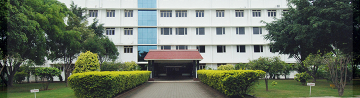

ABOUT
KG Information system private Limited (KGiSL) is a division of $500 million KG Group conglomerate that has diverse interests in various fields like Software, Textiles, Engineering, Finance, Healthcare, Education, Renewable Energy, Infrastructure and Entertainment...... The KGiSL Group is also in the forefront of Healthcare and Education with its internationally recognized hospital and commendable educational institutions KGiSL is an EN ISO 9001:2008 company certified for its compliance to international quality standards and procedures, in Software Engineering and Engineering Design Services. KGiSL is also an SEI CMM® Level 4 company.

Don’t be afraid to fail. Don’t waste energy trying to cover up failure. Learn from your failures and go on to the next challenge. It’s OK to fail. If you’re not failing, you’re not growing.
The main objective of the KGiSL Institute of Technology is to provide industry embedded education and to mold the students for leadership in industry, government, and educational institutions......

KG College of Arts and Science (KGCAS) was started in the year 2005 with the intent to provide quality education at the undergraduate level and post-graduate level, focusing primarily on meeting the talent requirements of the domestic and global IT and IT-enabled service providers.
The infrastructure available in the institution for the pursuit of IT and ITES education is unparalleled. A very liberal scholarship provides for opportunities for economically challenged yet academically brilliant students to take up courses at the college.